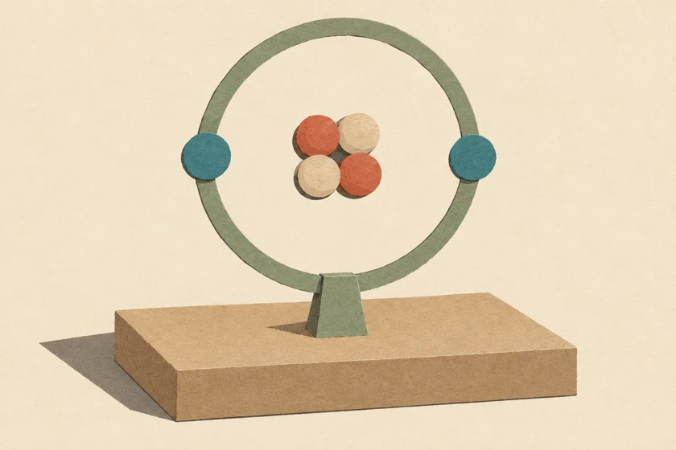

<!doctype html><html lang="en"><meta charset="utf-8"><meta name="viewport" content="width=device-width,initial-scale=1"><title>E2 Atomic World · DSE Physics Lab</title><script defer src="lab-nav.js"></script><link rel="stylesheet" href="topics.css"><main style="--accent:#abcbb8"><header><div><span class="tag">YD PHYSICS　/　06 / E2</span><h1>E2 Atomic World</h1><p lang="zh-HK">微觀世界 · AW01–AW03</p></div></header><h2>AW03 · Probing into the Nanoscale<small lang="zh-HK">探索納米世界</small></h2><a class="tool" href="rayleigh-criterion.html"><span>Rayleigh Criterion<small lang="zh-HK">瑞利判據</small></span></a><h2>Topic guide<small lang="zh-HK">課題索引</small></h2><ul><li><b>AW01</b><span>Photoelectric Effect<small lang="zh-HK">光電效應</small></span></li><li><b>AW02</b><span>Atomic Models / Wave or Particle<small lang="zh-HK">原子模型 / 波或粒子</small></span></li><li><b>AW03</b><span>Probing into the Nanoscale<small lang="zh-HK">探索納米世界</small></span></li></ul><footer>Designed by Mr. Lai Ka Chun (LKU) · CPCYDSS</footer></main></html>